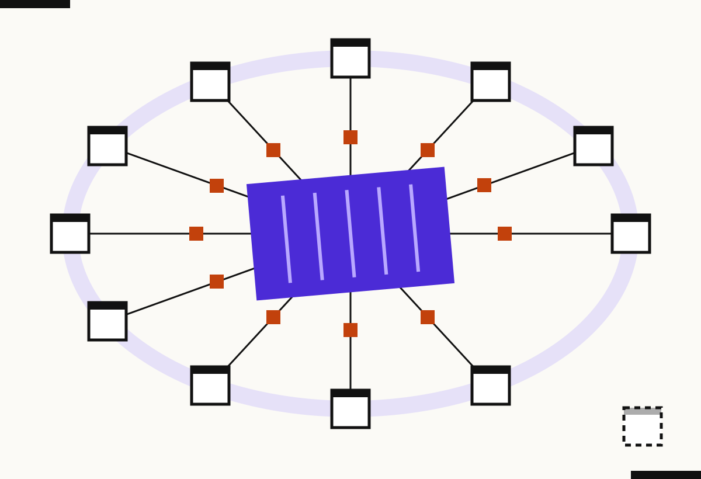

ConsciousCompute.org · Working paper · October 13, 2026
Conscious Compute: A Definition, a Measurement Protocol, and a Lineage

Abstract
This paper defines conscious compute as computing infrastructure whose operator publishes the cost it imposes on the surrounding community, shares a defined and enforceable portion of the value created, and submits both commitments to independent verification. It proposes a nine-indicator measurement protocol, built on existing standards and published research on energy, carbon and water, and describes four use cases in which the protocol can be applied: a county siting decision, an AI training run, an enterprise procurement, and a tokenized cultural asset. It traces the concept to the Zero Waste IT white paper of 2017 to 2018, to written use in August 2019, and to the exact phrase in a February 2023 domain registration. The protocol is a proposal. It has not yet been piloted, and the paper says plainly what would count as evidence against it.
1. The humane premise ✦
Every data hall has a neighbor. Somewhere within a few miles of the fans, someone drinks the same water, pays into the same grid, and hears the same hum. In most siting decisions that person learns the terms after they are fixed. The cost arrives as a rate change, a drought notice, or a truck route. The benefit arrives somewhere else.
Conscious compute begins from a plain moral claim: the people who carry a cost are parties to the deal, not externalities of it. This is not sentiment. It is the oldest finding in the study of shared resources, that arrangements last when the people affected can see what is happening and have a say in it (Ostrom, 1990). The humane position and the durable position turn out to be the same position.
2. The definition
It is operational, since each clause can be audited. It is scale-free, applying to a hyperscale campus, a colocation cage, a model-training cluster, or a token whose value depends on a community's attention. And it is not a synonym for green computing. Green computing asks how much a workload consumes. Conscious compute asks who carries what remains and who receives what is made.
3. How it works: three tests
One test makes an operator transparent. Two make it generous. Three make it accountable, which is the threshold for the name.
4. Theoretical grounding
The Published and Checked tests descend from Ostrom (1990), whose comparative work on long-enduring commons found that monitoring, graduated sanctions and accessible conflict resolution distinguish arrangements that survive from those that collapse. The Shared test answers the dynamic Hardin (1968) described, where private gain from a shared resource outruns private responsibility for it. Stakeholder theory supplies the corporate bridge: Freeman (1984) argued that firms owe attention to those affected by their actions, and Elkington (1997) gave the argument an accounting form. The depth of the community's role borrows from Arnstein (1969), whose ladder of citizen participation separates real power from consultation theater.
The empirical case for disclosure is now strong. Strubell, Ganesh and McCallum (2019) showed that training a single large language model can carry a substantial carbon cost, and Li, Yang, Islam and Ren (2023, preprint) estimated that training GPT-3 in Microsoft's U.S. data centers could directly evaporate about 700,000 liters of freshwater, and projected global AI-related water withdrawal of 4.2 to 6.6 billion cubic meters in 2027. The Lawrence Berkeley National Laboratory report (Shehabi et al., 2024) provides the national baseline for U.S. data center electricity demand and scenarios to 2028. These sources measure the machine. Conscious compute adds the question the sources do not ask: who pays, who shares, and who checks.
5. A note on consciousness
The word "conscious" is chosen on purpose. Jamie Wheal and Steven Kotler (2017) make the case in Stealing Fire that institutions already treat human attention and states of mind as a performance resource. If that is right, a data hall is where collective attention is physically processed, and the people who supplied it are owed more than a checkbox. The bridge is this author's reading, not a claim made by Wheal, and readers should check it against the book.
6. Measurement protocol ⟶
Each test is scored on three indicators. Each indicator receives a level: 0 absent, 1 promised, 2 documented, 3 independently verified. The maximum score is 27.
| Test | Indicator | What is measured | Instrument |
|---|---|---|---|
| Published | P1 Energy and carbon | Operational carbon per unit of useful work, including embodied emissions | Software Carbon Intensity, ISO/IEC 21031:2024 |
| Published | P2 Water | Water withdrawn and consumed, on site and in electricity generation | Method of Li et al. (2023); utility records |
| Published | P3 Local cost allocation | Who pays for grid upgrades, rate effects, land, noise and traffic, disclosed before approval | Filed tariff and interconnection documents; public disclosure record |
| Shared | S1 Formula | Stated percentage or formula of revenue or appreciation to the community | The contract |
| Shared | S2 Enforceability | Escrow, covenant or remedy if the share is not paid | Legal review of the instrument |
| Shared | S3 Voice | Rung reached on Arnstein's ladder: informed, consulted, or partnership | Governance documents; community survey |
| Checked | C1 Independence | Verifier has no financial stake in the outcome | Conflict disclosure |
| Checked | C2 Frequency and openness | Interval of verification and whether results are public | Published reports |
| Checked | C3 Consequence | Defined, graduated response to failure, after Ostrom's sanctions principle | The contract and the enforcement record |
The Software Carbon Intensity specification expresses carbon as SCI = (E × I + M) per R, where E is energy, I the carbon intensity of that energy, M embodied emissions amortized over hardware life, and R a functional unit such as a transaction or an API call. Choosing R is the hard part, and the protocol requires the operator to publish its choice and defend it.
The thresholds and level definitions are proposed, not validated. A pilot should test inter-rater reliability, meaning whether two independent assessors score the same operator the same way, and whether the six-of-nine rule separates operators that communities themselves judge fair from those they do not.
7. Use cases ↝
Measure: P1 to P3 as a one-page public scorecard filed before the vote, S1 to S3 as term-sheet commitments, C1 to C3 as the named verifier and reporting calendar.
Passes if: the scorecard is public before approval and the community share is in the approval conditions. Failure looks like: numbers released after the vote, or a share described as intent.
Measure: SCI per training run and water per run, reported alongside the model documentation in the manner of model cards (Mitchell et al., 2019), with location and time of compute stated because carbon intensity varies by both.
Passes if: the run's energy, carbon and water are published with method, and the host community of the data hall is named. Failure looks like a single average figure with no site.
Measure: the nine indicators as procurement criteria in a data center request for proposal, scored on the same 0 to 3 scale for each bidder.
Passes if: the buyer can compare bidders on community terms the way it compares them on price and latency. A buyer's reputation then no longer rides on a supplier's silence.
Measure: at ImpactSoul, each issuance records the infrastructure cost (P1 to P3), the percentage of appreciation returned to the community that creates the asset's value (S1 and S2), and an independent attestation of delivery (C1 to C3).
Passes if: the community that drives value holds a defined, enforceable part of it. Failure looks like impact described in the prospectus and absent from the contract.
8. Lineage: from Zero Waste IT to conscious compute
The earliest documented ancestor is Zero Waste IT (ZWIT), a white paper circulated in draft in 2017 and 2018. The version preserved in the author's files, Draft 2.1 dated January 11, 2018, is titled "Zero Waste IT: The Ride-Sharing Service of IT." Its argument was that idle IT capacity is waste, and that sharing capacity, as ride-sharing shares vehicles, removes it.
ZWIT was a marketplace first and a conscience second, but the conscience was written down. The paper listed five social responsibility pillars: lower power consumption, reuse of hardware and facilities, nudging buyers toward more responsible suppliers by building carbon footprint and social responsibility scores into recommendations, a platform for lower-energy proof-of-stake networks, and transparency with data replacing salesmanship. Conscious compute keeps that instinct and moves the question. Zero Waste IT asked how to waste nothing in the machine. Conscious compute asks how to waste no one around it.
| Date | Evidence | What it shows |
|---|---|---|
| 2017 to 2018 | Zero Waste IT white paper, Draft 2.1 dated January 11, 2018 | Conceptual ancestor: shared capacity, zero waste |
| August 27, 2019 | Email, subject "Fusechain: appreciating your continued support" | Earliest located written use of eco-conscious compute; references ZWIT and the iMasons network |
| January 26, 2021 | Email to a colleague proposing a panel on eco-conscious compute | Second written use |
| February 18, 2023 | Domain registration for consciouscompute.net | First located instance of the exact phrase |
| October 13, 2026 | Publication at ConsciousCompute.org | Public, dated claim |
The author used the idea in conversation for over a decade before committing it to writing. These are the earliest located written records, not a claim that earlier writing does not exist. Mail before 2019 and several accounts have not been searched exhaustively.
9. Limitations ※
The protocol would be wrong if communities rate high-scoring operators no more fairly treated than low-scoring ones, or if operators can score well by gaming the choice of functional unit or verifier. Water and carbon figures vary by method, site and year, and the preprint cited here has not been confirmed as peer reviewed. Others use similar phrases, including sustainable computing and eco-conscious computing, in energy-efficiency contexts, and this paper claims a specific, testable meaning rather than those fields. Any claim to the phrase as a trademark is a separate matter for counsel, and nothing here is legal advice.
⁂ The cloud has neighbors. Conscious compute is the promise to act like it.
References
Arnstein, S. R. (1969). A ladder of citizen participation. Journal of the American Institute of Planners, 35(4), 216 to 224.
Elkington, J. (1997). Cannibals with Forks: The Triple Bottom Line of 21st Century Business. Capstone.
Freeman, R. E. (1984). Strategic Management: A Stakeholder Approach. Pitman.
Green Software Foundation. Software Carbon Intensity specification, adopted as ISO/IEC 21031:2024. greensoftware.foundation
Hardin, G. (1968). The tragedy of the commons. Science, 162(3859), 1243 to 1248.
Li, P., Yang, J., Islam, M. A., and Ren, S. (2023). Making AI less "thirsty": Uncovering and addressing the secret water footprint of AI models. arXiv preprint 2304.03271. arxiv.org/abs/2304.03271
Mitchell, M., et al. (2019). Model cards for model reporting. Proceedings of FAT* 2019. arXiv 1810.03993. arxiv.org/abs/1810.03993
Ostrom, E. (1990). Governing the Commons: The Evolution of Institutions for Collective Action. Cambridge University Press.
Shehabi, A., et al. (2024). 2024 United States Data Center Energy Usage Report. Lawrence Berkeley National Laboratory, LBNL-2001637. eta-publications.lbl.gov
Strubell, E., Ganesh, A., and McCallum, A. (2019). Energy and policy considerations for deep learning in NLP. Proceedings of ACL 2019, P19-1355. aclanthology.org/P19-1355
Wheal, J., and Kotler, S. (2017). Stealing Fire: How Silicon Valley, the Navy SEALs, and Maverick Scientists Are Revolutionizing the Way We Live and Work. Dey Street Books.
Greenberg, T. (2018). Zero Waste IT: The Ride-Sharing Service of IT. White paper, Draft 2.1, January 11, 2018. Unpublished.